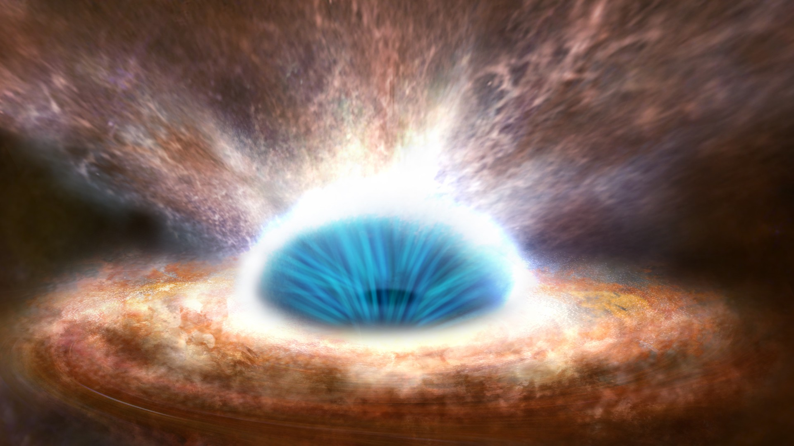

Vedci vytvorili prstence horúcej plazmy, ktoré napodobňujú žiariace akrečné disky, ktoré obrovskou rýchlosťou rotujú okolo čiernych dier. Laboratórne experimenty by mohli objasniť, ako čierne diery rastú. Akrečný disk je prstenec horúcej plazmy alebo ionizovaného plynu, ktorý sa otáča okolo horizontu udalostí čiernej diery, hranice, za ktorú nemôže uniknúť nič, dokonca ani svetlo. Superrýchla rotácia prstenca vytvára odstredivú silu, ktorá tlačí plazmu smerom von, čím pôsobí proti gravitácii čiernej diery a udržiava plazmu na stabilnej dráhe.
Вчені створили кільце плазми, яке напоминає сяючі акриційні кільця, які з великою швидкістю обертаються навколо чорних дір. Лабораторні експеременти моги б обʼяснити, як чорні діри ростуть. Акриційний диск є кільце гарячої плазми або іонізуючого газу, який обертається навколо горизонту події чорної дири, границю, за яку ніщо не може проникнути, навіть світло. Супершвидке обертання кільця створює відцентрову силу, яка виштовхує плазму назовні, чим діє проти гравітації чорної дири і втримує плазму на стабільній орбіті.
Plazmu tvorí hmota, ktorá je ťahaná k hranici čiernej diery a potom je prehriata jej intenzívnou gravitačnou silou. Jediným priamym pozorovaním akrečného disku je rozmazané halo oranžového svetla vyfotografované okolo M87*, čiernej diery veľkosti slnečnej sústavy v srdci galaxie Messier 87. Teraz však vedci z Imperial College London vytvorili jeden takýto pomocou univerzitného zariadenia MAGPIE (Mega Ampere Generator for Plasma Implosion Experiments).
MAGPIE vytvoril umelé prstence urýchľovaním ôsmich samostatných plazmových prúdov a ich zrážaním, aby vytvorili centrálny rotujúci stĺpec, v ktorom podobne ako v akrečnom disku plazma bližšie k stredu rotuje rýchlejšie ako plazma smerom k jeho okraju. Rotujúce hmoty vydržali len jednu úplnú rotáciu, ktorá trvá približne 150 nanosekúnd (150 miliardtin sekundy). Vedci však dúfajú, že sa im podarí predĺžiť trvanie impulzov, čo im umožní zistiť, ako disky rastú počas viacerých rotácií.

Výsledky boli publikované v časopise Physical Review Letters a tím dúfa, že budúce experimenty pomôžu zodpovedať jednu z najväčších otázok o akrečných diskoch: Ako rastú čierne diery, ak akrečné disky zostávajú na stabilných dráhach okolo horizontov udalostí? „Hlavnou teóriou je, že nestabilita magnetických polí v plazme spôsobuje trenie, v dôsledku čoho plazma stráca energiu a padá do čiernej diery,“ napísali výskumníci vo vyhlásení. Dodali však, že budúce experimenty môžu túto teóriu dokázať.
Nie je to prvýkrát, čo sa vedci pokúsili skúmať čierne diery v laboratóriu. V minulosti sa skúšali vytvoriť akrečné disky pumpovaním tekutých kovov cez kruhové potrubia pri vysokých rýchlostiach, aby napodobnili vlastnosti plazmy. Keďže však kovová kvapalina je obsiahnutá v potrubí a netvorí sa prirodzene, výskumníci môžu touto metódou získať len obmedzené množstvo poznatkov.
Vedci použili laboratórne zariadenia aj na kopírovanie iných vesmírnych telies, napríklad Slnka. V januári výskumníci z Kalifornskej univerzity v Los Angeles predstavili umelé „minislnko“, ktoré dokáže generovať zvukové vlny a napodobňovať tak účinky gravitácie. A v apríli vedci z Kalifornského technologického inštitútu po prvýkrát vytvorili malé umelé slnečné erupcie.